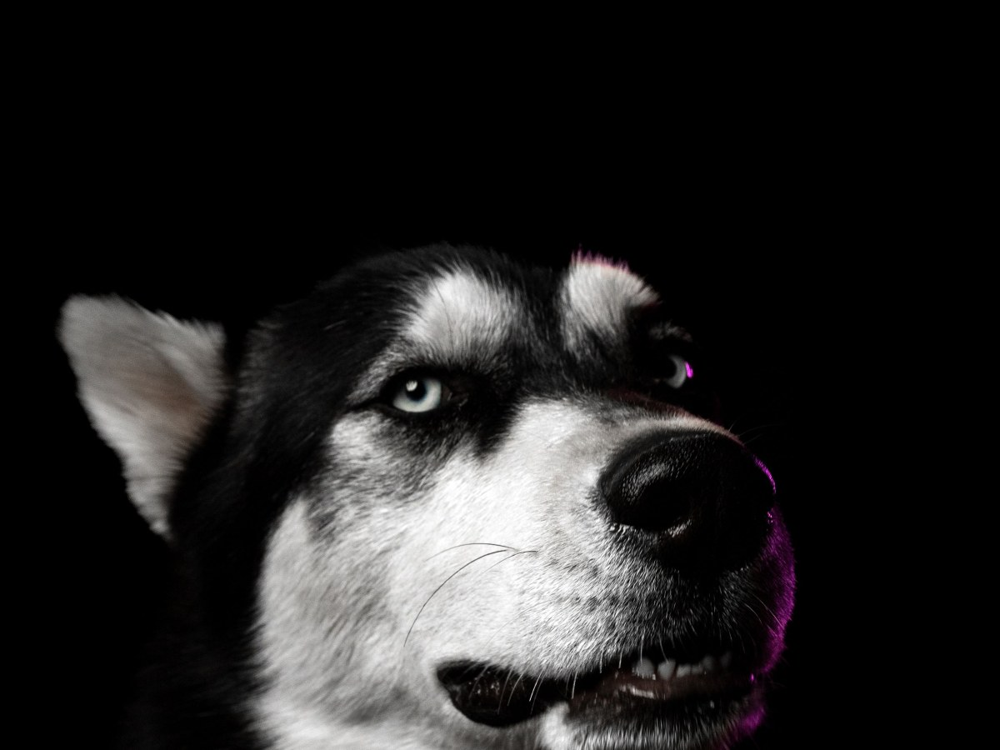
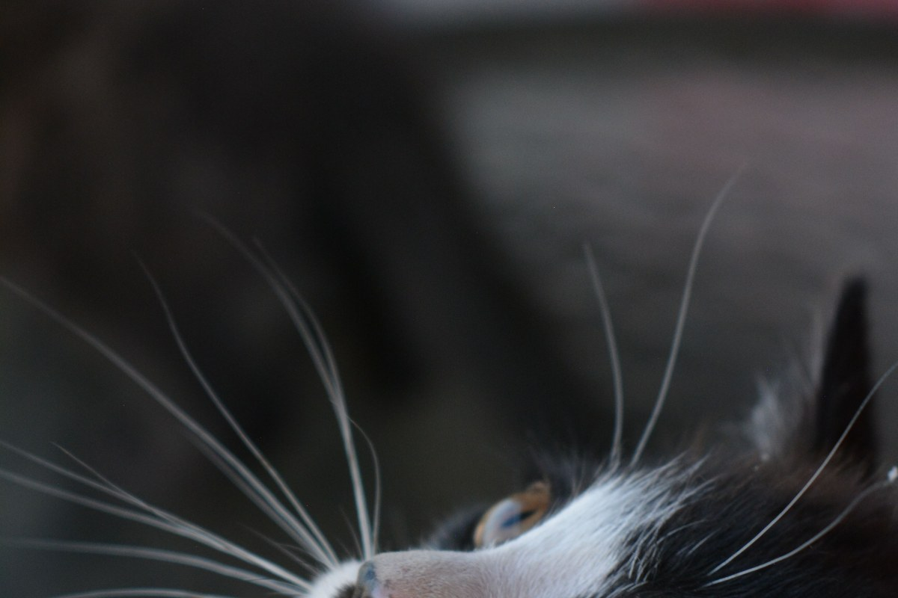
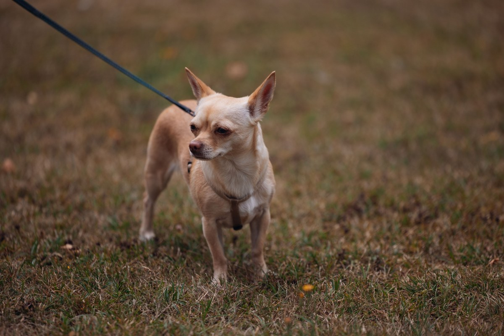
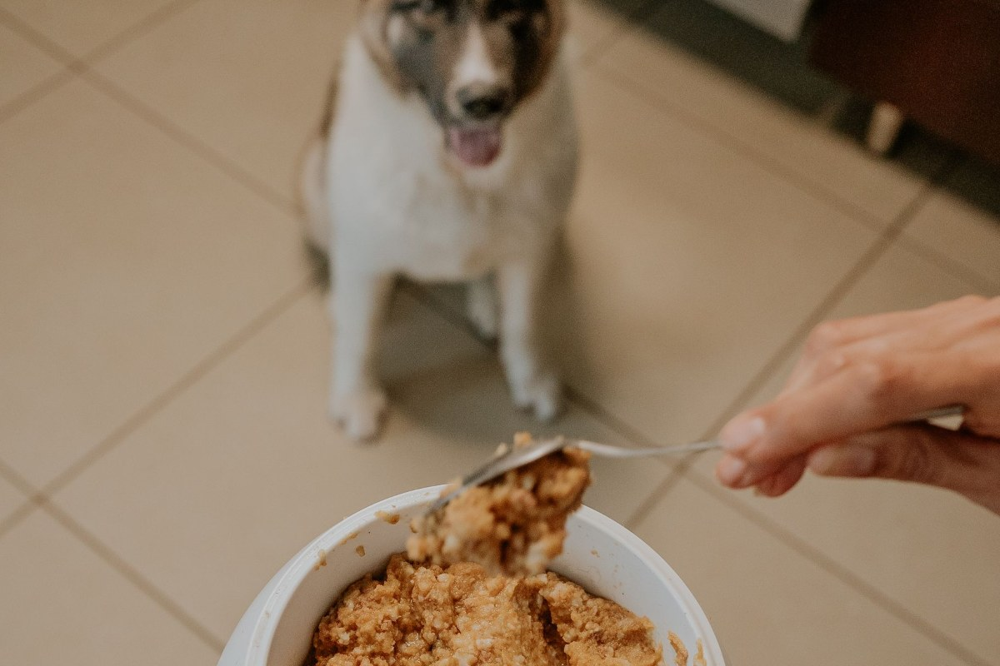
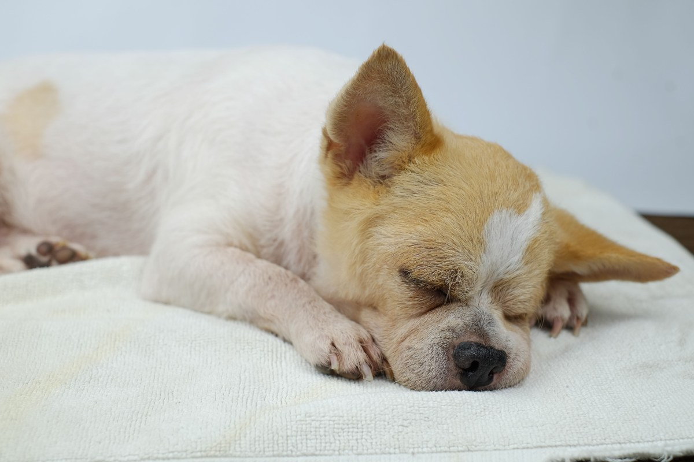

Puente Alto · Av. Concha y Toro 3346
¿Qué le digo?
Patitas Veterinarios: 5,0 con 67 reseñas y media hora por mascota. Llega con la historia lista.
- 67reseñas en Google
- 5,0de promedio
- 30minutos por mascota en su agenda
- 0páginas suyas: la que abre es la del software
Antes de entrar
Lo que hay que contarle al veterinario
01
Desde cuándo
La fecha ayuda más que «hace tiempo».
02
Qué cambió
Comida, agua, pipí, caca, ánimo: qué está distinto.
03
Qué comió
Lo que no debía, aunque dé vergüenza contarlo.
04
El carnet
Vacunas y desparasitación, con las fechas que estén anotadas.
05
Qué le dieron en casa
Para decirlo, no para repetirlo.
06
Una foto o un video
El síntoma nunca aparece en la consulta.
Guárdalo en el celular
Desde cuándo: Qué cambió (comida, agua, pipí, caca, ánimo): Qué comió que no debía: Vacunas y desparasitación (fechas): Qué le dieron en casa: Foto o video del síntoma:
La lista es una propuesta y no reemplaza la consulta: es para no olvidarla en la sala.
Media hora para cada uno.
Qué hacen
Lo de siempre, con hora
-
Consulta
El control de siempre
Media hora por mascota.
-
Vacunas
Al día
Con el carnet en la mano.
-
Gatos
También atienden
Pregunta por la hora tranquila.
-

Cachorros
La primera visita
Plan de vacunas y peso.
-

Control
Después del tratamiento
Para ver si sirvió.
-
Agenda
Una mascota por hora
Dos mascotas, dos horas seguidas.
Los servicios son de ejemplo. Lo verificado es su agenda: media hora por mascota y horas seguidas si llevas dos.
Cinco coma cero en 67 reseñas, y la única página que abre lleva el nombre del software.
Google y su agenda, al 16-09-2026
El lugar
Una sala, un mesón y tiempo




Fotos de referencia: ninguna es de la veterinaria.
Dónde está
Av. Concha y Toro 3346
- +56 9 4406 2569
- Comuna
- Puente Alto
- Hora
- Se pide en su agenda online
Si llevas dos mascotas, pide dos horas seguidas: atienden una cada media hora.
Av. Concha y Toro 3346 Abrir en Google Maps
Para Patitas
Qué es real y qué falta
Lo verificado
La dirección, el WhatsApp, el 5,0 con 67 reseñas y su agenda: media hora por mascota, al 16-09-2026.
Lo de ejemplo
La lista de la sala de espera, los servicios y todas las fotos.
Lo que falta
Una página con su nombre. Ya pagan la agenda: se puede incrustar en un sitio propio y que la marca sea suya.